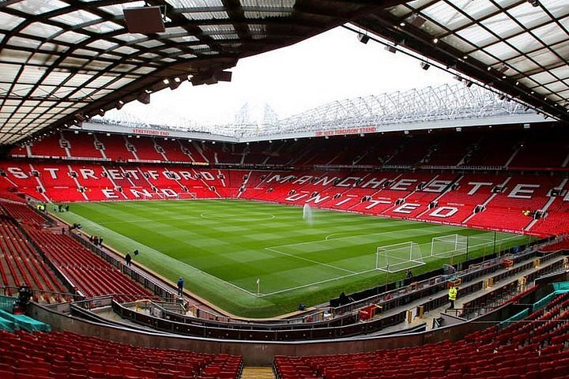
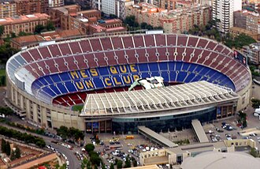
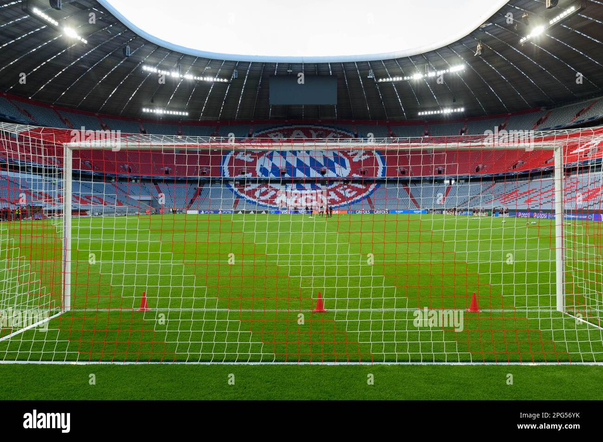

Galería

Cancha
La cancha de Old Trafford, estadio del Manchester United

Estadio
Estadio Spotify Camp Nou, del FC Barcelona

Balón
Balón oficial de la UEFA Champions League

Arco
El Allianz Arena
El fútbol es mi hobby desde hace años. Simplemente me gusta verlo, disfruto los partidos y no me pierdo la oportunidad de ver un buen encuentro cuando puedo. Aquí comparto un poco de por qué me gusta tanto.
Conoce mi hobbyEl fútbol me gusta desde hace mucho tiempo. Disfruto ver los partidos, sentir la emoción de un encuentro reñido y esa sensación de no saber cómo va a terminar hasta el final. Es un deporte que engancha, y verlo se ha vuelto una de mis actividades favoritas para relajarme.
Sigo principalmente el fútbol europeo, en particular la Premier League, LaLiga y la Serie A. Los fines de semana suelo sentarme desde la mañana a ver varios partidos seguidos, aunque disfruto viendo fútbol cuando se pueda, entre semana o fin de semana como este mes con la Champions.
Los partidos parejos, donde ningún equipo tiene el resultado asegurado hasta el pitazo final.
Porque cada partido es distinto, y siempre hay algo que puede sorprenderte.
Viendo partidos entre semana cuando puedo, y con más tiempo los fines de semana, que es cuando se juegan la mayoría.
Cada liga tiene su propio estilo. Esto es lo que más me gusta de cada una:
Inglaterra. Es mi liga principal. Me gusta porque los partidos son muy rápidos, hay poco tiempo muerto y casi siempre se generan muchas opciones de gol.
España. La veo de vez en cuando, sobre todo los partidos más importantes. Me gusta el nivel técnico y la calidad individual de los jugadores.
Italia. Es la que más me ha sorprendido últimamente. Los equipos son muy ordenados tácticamente y los partidos se sienten como un ajedrez.

La cancha de Old Trafford, estadio del Manchester United

Estadio Spotify Camp Nou, del FC Barcelona
Balón oficial de la UEFA Champions League

El Allianz Arena
¿También te gusta el fútbol europeo? Escríbeme.